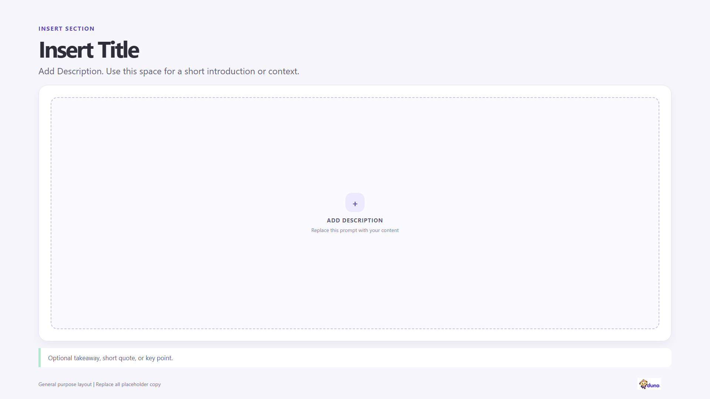
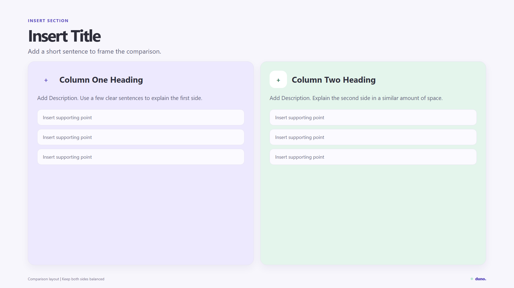
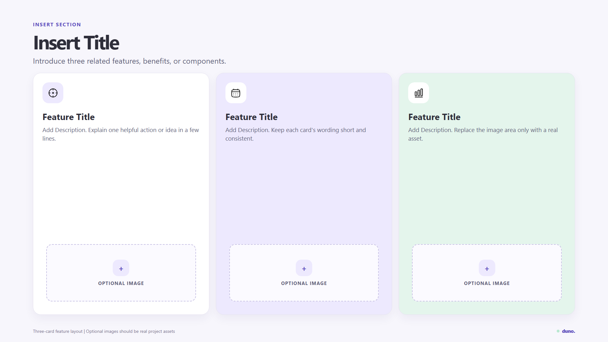
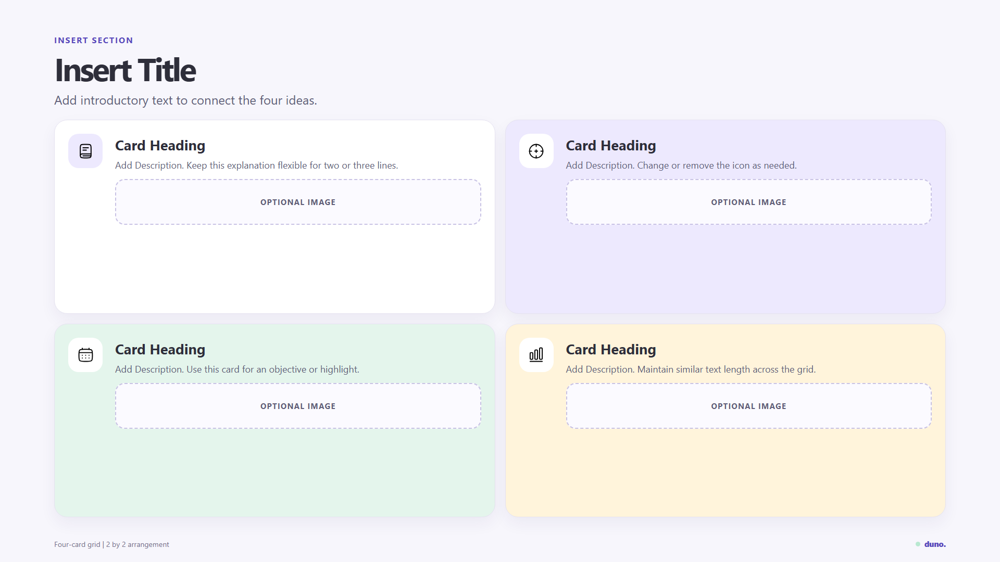
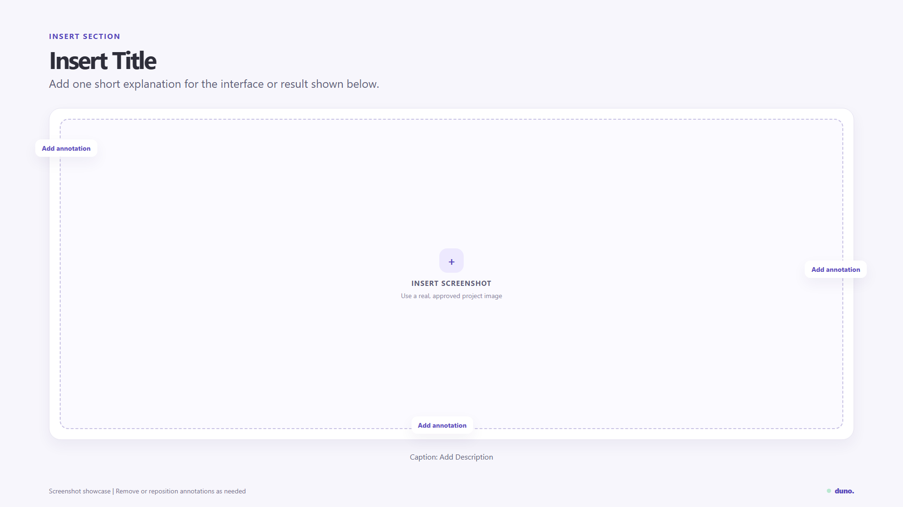
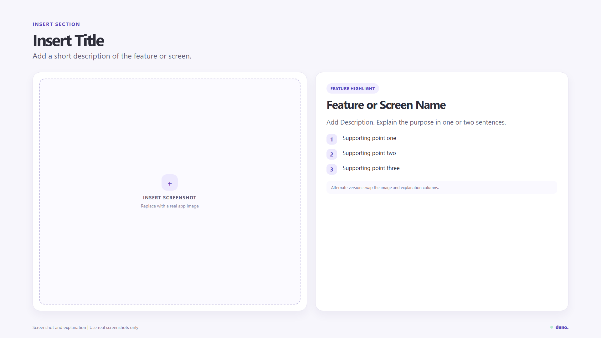
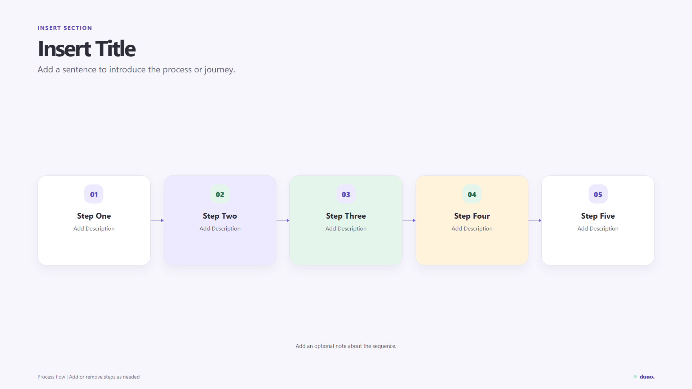
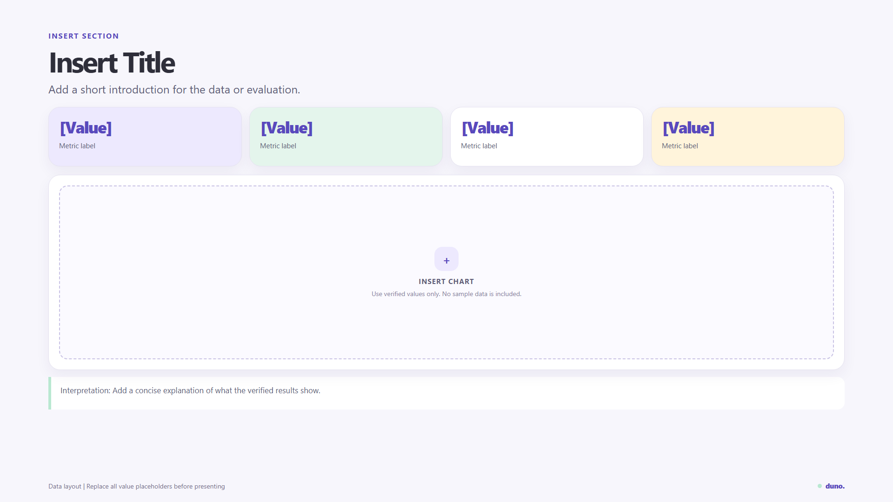
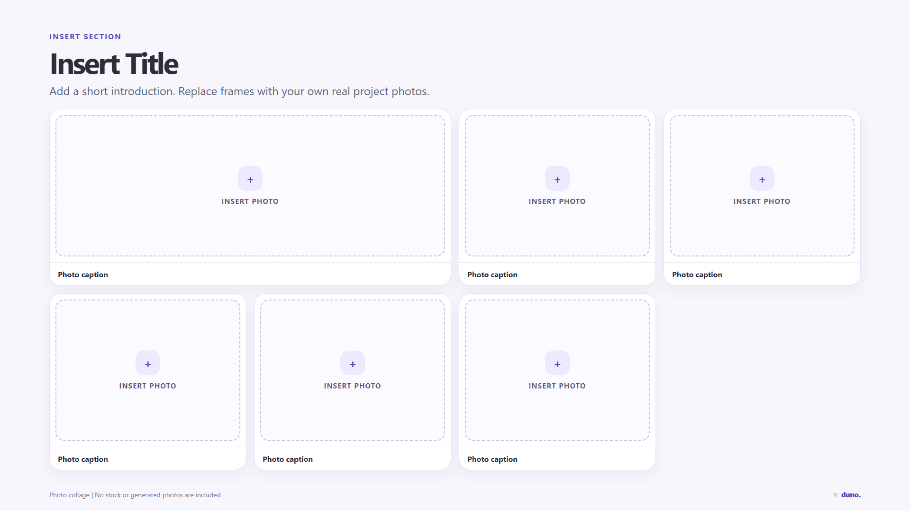
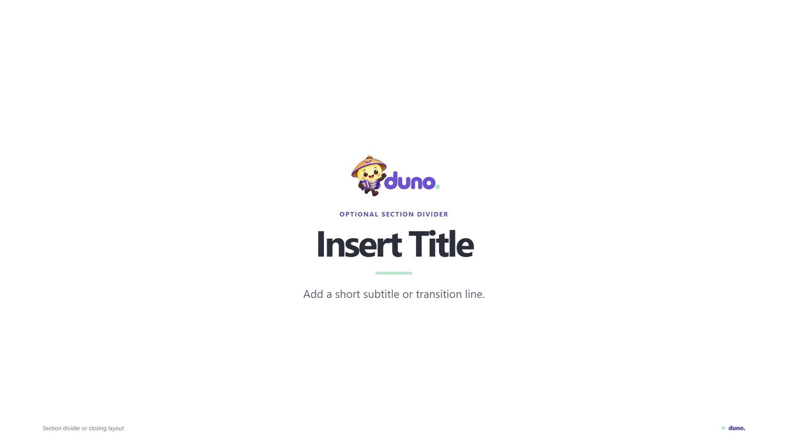

T01 | Title and Content
General explanations, introductions, and additional project details.
Open editable HTML layoutTen optional templates for extending the Duno App Development presentation. Open a source layout to edit the text and replace placeholder areas. Each preview is a 1920 by 1080 PNG.
Solar icon set by 480 Design, CC BY 4.0. Official Duno branding appears only where appropriate.

General explanations, introductions, and additional project details.
Open editable HTML layout
Before and after, problem and solution, or feature comparisons.
Open editable HTML layout
Three functionalities, benefits, or technical components.
Open editable HTML layout
Challenges, objectives, requirements, and project highlights.
Open editable HTML layout
One large real screenshot with optional annotation labels.
Open editable HTML layout
Feature walkthrough with a screenshot on one side and explanation on the other.
Open editable HTML layout
Development steps, user workflows, deployment, or feature demonstrations.
Open editable HTML layout
Evaluation, usage, analytics, and findings. Replace every value placeholder with verified data.
Open editable HTML layout
Six empty frames for real consultation, development, and testing photos.
Open editable HTML layout
Section transitions, acknowledgments, and optional additional closing slides.
Open editable HTML layout